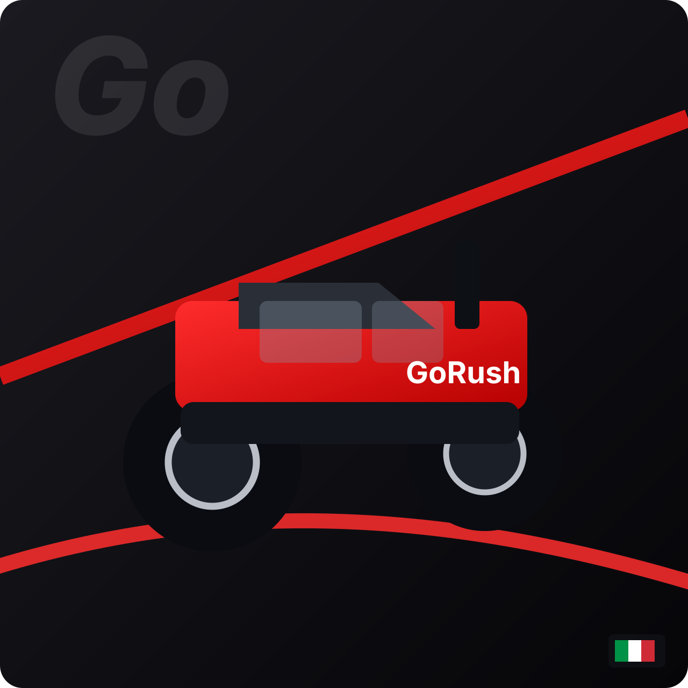

Trattori Affidabili per l’Agricoltura Moderna
GoRush Motors Verona è specializzata nella fornitura di trattori agricoli affidabili e performanti, progettati per garantire efficienza, potenza e durata nel lavoro quotidiano.
Offriamo una gamma completa di trattori per diverse esigenze operative, dall’agricoltura professionale alle aziende agricole di piccole e medie dimensioni. Ogni macchina è selezionata per offrire prestazioni solide, manutenzione semplice e un eccellente rapporto qualità-prezzo.
Il nostro team con sede a Verona supporta i clienti in ogni fase: scelta del modello più adatto, consulenza tecnica e assistenza dedicata.
Con GoRush Motors scegli una soluzione concreta per lavorare meglio, aumentare la produttività e investire in macchine affidabili nel tempo.
